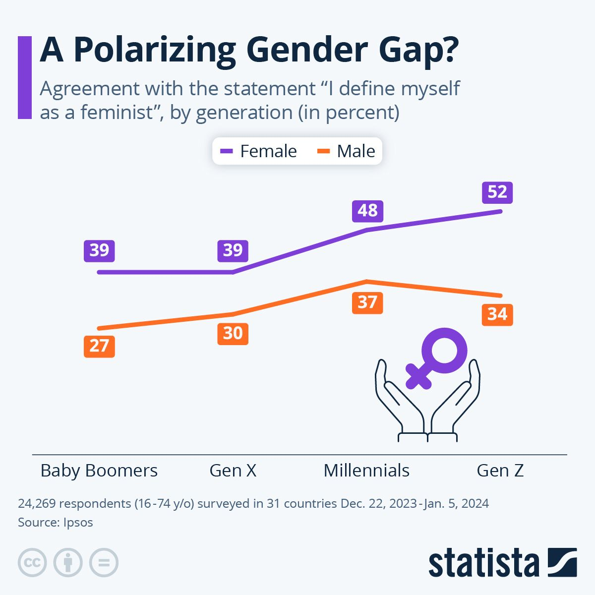

ARE MEN UNDER ATTACK?
A website exploring the myths around men
Ever scroll through your feed and feel like everyone is saying the same thing?
That’s not a coincidence! This is because algorithms feed you more of what you already like and agree with. Over time, this creates what we call an ECHO CHAMBER. An echo chamber is a space where you mostly see ideas that confirm your existing opinions. That can make certain beliefs feel way more ‘true’ or normal than they actually are. Unfortunately, this gets even trickier because our brains already tend to seek out information that aligns with our existing beliefs: this is called confirmation bias. Most social media platforms act as echo chambers.
When you’re only hearing one side, things start to feel black-and -white. People become ‘good’ or ‘bad’ and complex problems are reduced to simple dichotomies.

This happens in lots of online communities, one example is the manosphere. Here, the huge focus on emotion and the neglect of facts, can lead to a deeply divided worldview: people start thinking in terms of us versus them, men versus women. It fuels polarization by framing men and women as opponents, it encourages emotional suppression in men and enables hostility or even physical violence against women.
Where can I find out more?Manosphere content is filled with emotional buzzwords:
ALPHA!, SIMP!, WOKE!, CUCK!, FEMINAZI!
These words make you react instead of reflect.
This website is not trying to tell you what to think: it's designed to show you how you can think for yourself.
The goal of the site is to push back against the post-truth era, where alternative facts replace actual facts, and feelings have more weight than evidence.
AM I THINKING CRITICALLY?
Critical thinking is about being aware that not everything you read is true: it's a skill you can develop, not something people are born with.
When you read content online, it can be helpful to ask yourself:
- Is this actually true, or is it just someone’s opinion said with confidence?
- Does someone gain power, money or followers from me buying into this?
- What kind of evidence would disprove this idea, and am I willing to look for it?
- Can I think of examples from my own life that might contradict this idea?
- Are there emotional buzzwords used, like alpha, simp, woke, cuck or feminazi? Is this language used to explain, or is it just here to trigger a reaction and get clicks?
- What emotions does this trigger in me?
- Does the message oversimplify something that could actually be more complex?
→ Examples: ‘All women are X or all men are Y.’
- Does this message encourage empathy and understanding? Or does it spread division or blame?
- Is this content trying to manipulate my opinion?
MANOSPHERE MYTHS?
If you're a young man on the internet, you've probably heard this before:
“80% of women only go after the top 20% of men.”
“Women are wired to ‘date up’. If a better man comes along, they’ll leave you.”
These ideas, which are often thrown around as HARSH TRUTHS are based on real concepts. But the ways they are used by manosphere influencers are full of distortions. Let's take a look at the origins of these ideas and where they fall short.
The Pareto Principle (The 80/20 rule)
The Pareto principle states that for many outcomes, roughly 80% of consequences come from 20% of causes. The manosphere twists this into dating logic, by stating that 80% of women are only interested in 20% of men.
This is presented as a natural law instead of what it really is: a pattern that sometimes shows up in very specific -often economic- situations. It may sound scientific, but that is not the case.
What's wrong here?
- The idea mainly traces back to dating-apps data that showed that women rated 80% of men as below average in attractiveness.
- But: online swiping ≠ real-life dating!
- Dating-apps are designed for snap-judgments, mostly based on photos. That means that people could easily swipe left on someone they might actually like in real life.
- Fun fact: data shows that both women AND men pursue partners on dating-apps that are on average more attractive than themselves.
- So, if anything, this pattern applies to both genders. But that’s still a far cry from what the 80/20 rule claims.
- There is no scientific research that provides evidence for this rule.
TIME FOR SOME QUESTIONS!
Let’s take a look at some questions from the critical thinking toolkit by applying it to an example. We encourage you to do this with one of your parents/guardians.
- When Rollo says 100% of women are only attracted to 20% of men, do you think this is a fact, or could it just be his ‘opinion’ said with confidence? Does it maybe oversimplify reality?
- Rollo says ‘there are statistics’ multiple times, but doesn’t show them. Do you think this still counts as proof?
- When Rollo says only the top few percent of men should approach women and that anyone else doing so is seen as creepy, how does that make you feel?
- What kind of evidence would disprove this idea, and are you willing to look for it?
- Take a look at the links in the description that invite you to donate, buy his book or support his brand. Does it seem like the message is solely about informing the public with factual information, or building a business? Could it be that Rollo profits from you believing him?
- Does his message encourage empathy and understanding according to you? Or do you think it spreads division or blame?

Time to look at another example. Let's think critically about: Hypergamy.
This term comes from sociology and it originally referred to women marrying up - meaning marrying someone with more money, status or education. It is true that this occurs, for example, in parts of the world (or time periods) where gender inequality is high and women have fewer rights. But in the manosphere, this is turned into a biological claim stating that women’s brains are wired to seek higher-status men. This is not backed by any scientific evidence. In fact, research on marriage patterns in England from 1837-2021 found no evidence that women consistently ‘marry up’.
Besides this, scientific researchers found that as more women go to college than men, it's now more common for women to have higher education than their husbands. This shows that hypergamy isn’t a hardwired truth, if anything it’s a social trend, and like any trend, it can change!
Furthermore, research into attraction found that people who are seen as prosocial (meaning kind, helpful or caring), are also rated more physically attractive. That is a huge contrast to the manosphere message that men attract women by being dominant and high-status.
TIME FOR SOME QUESTIONS!
Let’s take a look at some questions from the critical thinking toolkit by applying it to the video below. We encourage you to do this with one of your parents/guardians.
- Is this actually true, or is it just someone’s opinion said with confidence? Does he back his claims with any scientific evidence?
-
Take a look at this statement: “I will say that one more time; she will not be fully satisfied unless she is in the position of doing 100% of the pursuing.” Do you think this message oversimplifies something that could actually be more complex? In other words: Do you believe this applies to all women, or could it be more nuanced than that?
Try this: Discuss this with a woman you know and trust -maybe your mom, sister, aunt or a friend- and see if this applies to them.
- Does someone gain power, money or followers from me buying into this?
Take a look at the links in the description that invite you to buy his online coaching packages. If he makes money from you believing his ideas about women, does that make you believe he’s showing the full picture? - Does this message encourage empathy and understanding? Or does it spread division or blame by turning relationships into a power struggle? → Would you want a relationship where you can’t show emotions, just to keep someone interested?
But what about....
Society is rigged against men, and women hold all the power now.
This idea is especially common in certain online communities like MGTOW (Men Going Their Own Way), Red Pill spaces, and incel forums. A popular claim there is that modern society favors women while men are systematically disadvantaged—emotionally, legally, and socially.
Let’s break it down with some critical thinking. Is this a fact—or a confident opinion?
When people speak with certainty, it can sound like the truth. But confidence isn’t the same as evidence. If we take a closer look, this idea doesn’t hold up. Many influencers promoting this claim also sell courses, coaching packages, or Matrix escape programmes.
That raises a question: are they really trying to inform you?
or are they trying to sell you something?
A common theme in these spaces is that feminism is no longer about equality, but about controlling men. They tend to blame societal movements—like feminism—for men’s struggles, instead of examining how systems and outdated gender norms might be the root of the problem.
Let's question this!
- Does this message encourage empathy or understanding?
- Does it offer real solutions, or just spread blame and anger?
- Could this message actually distract from the real problems men face?
Here’s a real issue that matters:
Men die by suicide at significantly higher rates than women. What’s interesting is that women are more likely to report suicidal thoughts—but men are more likely to act on them, often in more violent ways.
Why is that?
Experts suggest several factors:
- Men may lack strong emotional support systems
- Rigid gender roles can discourage men from opening up
- Cultural pressures around masculinity can make asking for help feel “weak”
But instead of addressing these systemic causes, the manosphere often uses these stats to support their belief that society is against men. In doing so, they may actually make it harder for men to get help.
Let’s put on our critical thinking hats again...
- When someone claims “society is rigged against men,” do they show real evidence? Or are they mainly using emotional appeals and frustration?
- How do messages like this make you feel? Angry? Hopeless? Defensive?
- What kind of support systems might actually help boys and men feel heard and supported?
- Do you think blaming feminism helps solve the problems men face? Or could it be pushing people further apart?
Where can I find out more?
Finally: Is masculinity under attack? And are men being feminized?
This is one of the most common talking points in online spaces like MGTOW, Red Pill, and incel communities. According to this narrative, modern society—through feminism, progressive gender politics, and cultural change—is trying to erase what it means to be a man. The claim is that men are shamed for showing masculine traits and are being forced to act more feminine—for example, by being emotionally open, empathetic, or taking on roles in the home.
Let’s ask: is this based on fact, or fear?
When we examine this critically, we can see that the idea isn’t really about facts—it’s based more on fear and nostalgia for a time when gender roles were simpler (but also more limiting).
What’s often described as an “attack” on masculinity is actually a challenge to rigid gender roles. These old roles didn’t just restrict women—they also put pressure on men to be tough, emotionally closed off, and dominant. So when society encourages men to express emotions, communicate better, or share responsibilities at home—that’s not about feminizing them. It’s about expanding masculinity.
Let’s stop and reflect:
- Does emotional intelligence make someone less of a man?
- Does showing kindness or vulnerability weaken masculinity—or strengthen it?
Here’s what the research says:
Studies show that healthy masculinity includes emotional awareness, flexibility, kindness, and mutual respect. And guess what? These traits actually improve men’s mental health, relationships, and overall well-being.
Masculinity isn’t vanishing—it’s evolving.
It’s not about giving up confidence, strength, or resilience:
It’s about redefining those traits to include humanity, not just hardness!
As sociologist C.W. Franklin put it, masculinity isn’t a fixed definition—it changes with the times. And today, it’s being rediscovered as something that can include both strength and softness, leadership and listening.
Let's apply critical thinking one last time:
- When someone says masculinity is “under attack,” do they provide real examples—or is it more of a feeling or opinion?
- Can you think of examples from your life where a man showed kindness, vulnerability, or care—and it made him more admirable, not less?
- What version of masculinity do you want to see in the world?
- Do you think expanding what it means to be a man is a threat—or could it be a strength?
BACK TO TOP
MUSIC AND INCELS
You don’t have to dive deep into pop culture to come across misogynistic music. Kanye West’s hit ‘Gold Digger’ opens with “She takes my money when I’m in need”, and Robin Thicke and Pharrell Williams’ “Blurred Lines” sparked many conversations about the music industry and perpetuation of rape culture. These may be more explicit examples, but sexist tropes have become ingrained in popular music over the decades; consider how many of our favourite songs use ‘bitch’ and ‘hoe’, or glorify pimping while belittling sex workers. Even songs by female artists have propagated stereotypes and non-representational truths about their peers, like P!nk’s ‘Stupid Girls’.
Music is a powerful tool to unite people, no matter our differences. But this power can also be used to divide, and we looked into the ways in which music discourses can lead men and boys down social media rabbit holes - into the ‘manosphere’.
Misogynistic content does not cause the development of misogynistic views, but instead those already expressing such tendencies are attracted to such music.
The literature has extensively associated misogynistic themes with metal, as well as hip hop and rap.
Tom MacDonald is a prime example of the latter, a rapper who rallies against all things ‘woke’. He teamed up with Ben Shapiro, another misogynistic content creator, on ‘Facts’, representing post-truth politics in how they espoused right-wing talking points framed as objectivity. You can check out a dissection of MacDonald’s musical and lyrical content from a critical perspective below:
However, one study found favorability amongst antifeminists also extended to a wide range of genres, like;
- Country - Jason Aldean’s Billboard-topper “Try That in a Small Town” demonstrates that the rise in popularity of country over the last few years has not happened independently of encroaches by the radical right. Steps are being made towards the genre becoming more inclusive of women and people of colour - just look at “COWBOY CARTER” - but star Maren Morris has announced that she has distanced herself from the country music industry because of ‘rampant’ sexism and racism
- Western classical music is not immune from being celebrated by online misogynists either. Many are drawn to centuries-old composers by a belief in the inherent superiority of Western traditions and the value they place in whiteness and patriarchy. This can also be tied to the contemporary trend of glorifying ‘Judeo-Christian’ civilisation and European history and tradition by accounts on platforms like X. Consider this - a video of a Dutch teenager performing a French-style chanson, which is regularly circulated on ‘anti-woke Twitter’ to push certain narratives…
- Rock
- EDM
Those in the manosphere are not just interested in ‘niche’ artists, and we can perhaps attribute their interest in ‘mainstream’ figures to a desire to ‘recruit’ or include more in their cause. Do any examples come to mind?
When it comes to ways in which music and other forms of art can fuel misogyny, it’s not simply about the messages contained within the music itself, however. When we look beyond the lyrical content, we can see how discourses on different genres perpetuate misogynistic ideas.
- Certain fandoms are made up of mostly men and boys, in this way music can reinforce incel culture because they bond not only over ideology, but also over music. Hence, the medium can be exploited as a gateway into the manosphere.
- Perhaps in a shift from 2000s, masculinist spheres now express a distaste for indie or emo music, perceiving it as ‘beta male’ or feminine. This reflects wider gendered assumptions about pop and its role in ‘cultural feminisation’.
- But we can look to many positive male role models in music who show that there is nothing emasculating about emotional lyrics about love and romance, like Hozier:
It’s also important to consider the ways in which music criticism has become a mechanism to push misogynistic ideas. We can look at Ben Shapiro’s breakdown of ‘WAP’ - while described as a mass humiliation, it is worth noting how it did not change the fact that millions are driven to his conservative, often misogynistic, content. Perhaps it is worth considering how being made a mockery of is crucial to the survival of grifters’ careers…
This is not a new phenomenon, either. Backlash was generated in 2014 when a critic described a star of the opera ‘Der Rosenkavalier’ as ‘unsightly’ - spurring on a wider conversation of misogynistic attitudes in the arts, specifically in arts criticism.
‘Fandom’ divisions also drive gender polarisation. Misogynistic stereotypes against girls and women who are seen to be ‘obsessive’ over certain bands or shows means that such circles can be exclusionary as an act of defence, mirroring how many women report men ‘gatekeeping’ them from sports fan groups. Not only does this drive polarisation between genders, but it also fosters the development of polarised views about the other gender and gendered expectations.
This makes sense, considering the ideological gap between genders is widening, especially amongst Gen Z. As demonstrated in the below graphs, women are continuing to become increasingly liberal, as men in younger age groups seem to be trending more conservative than their millennial counterparts.


There is no doubt amongst academics that this is driven by gendered polarisation, hence it is necessary that we amplify critical thinking over echo chambers - the whole purpose of this website! Music and culture is a relatively small but crucially relevant way in which this manifests, and can be just as an important avenue to overcoming it.
Artistic spotlight
It is far from true that all music by men propagates misogynistic ideas or projects truths that exclude women and their experiences. Antifeminists are shown to like sonic qualities such as high volumes and fast tempos – often associated with masculine gender expressions. But these are not bad things in themselves - there is nothing wrong with liking this kind of music! So we wanted to spotlight some male artists from the aforementioned genres who have more positive messages to provide:
Nick Shoulders is a singer and multi-instrumentalist from Arkansas, USA. He has been outspoken about the co-option of country by American Conservatism and the politics of racial supremacy. He has aimed to make his genre more inclusive to those outside of the rural white experience - while his music unashamedly country, he is unafraid to tackle relevant social and political issues, which you can check out below:
The Front Électronique is a collective of over 1,200 DJs and other musicians who aimed to mobilise against the French far-right. They galvanised dance and club music to celebrate diversity of individual beliefs, freedom of expression, and to resist the intolerance represented by Le Pen’s National Rally.
Any fan of rap or hip hop is familiar with Kendrick Lamar, J Cole, Childish Gambino, and the thoughtful themes and messages their work tackles. So we would recommend checking out Earl Sweatshirt and considering the ways in which his gritty alternative hip hop explores his struggles with mental health. Society is becoming increasingly aware of the importance breaking the stigma around discussing men’s mental health, especially amongst young men - as highlighted in our Mental Health tab, things like depression and social isolation are key drivers of radicalisation of young men into the manosphere. Male artists who, like Earl Sweatshirt, are open and frank about these hardships can set a good example for teenagers.
Male role models who challenge toxic masculinity are not exclusive to music and can be found throughout culture!
- Marcus Rashford is a footballer for Aston Villa and the England national team who is also recognised for his activism against child poverty, particularly food insecurity. His work can serve as an inspiration, going from a working class boy from a single parent family to becoming a man who campaigned to give back to his community. He helped to lead a campaign to extend free school meals during lockdown, which was successful in changing policy of the UK government, and helped to promote literacy programmes for underprivileged children.
BoyBoy is a YouTube channel run by creators who - as we can see below - use their humour to satirise and mock the myths and post-truth narratives of those in the manosphere:
Even Dwayne ‘The Rock’ Johnson - who we can consider a caricature of hegemonic masculinity - has spoken out about his mental health and the importance of seeking help.

BACK TO TOP
SUPPORTS FOR PARENTS
The Manosphere, a decentralised online movement aimed at pulling isolated and vulnerable young persons, particularly young men, to the social and political right, and indoctrinating them via extreme and polarising rhetoric, has become both more of a topic of discussion, and a real and present danger. The movement, led by a variety of isolated but related figureheads as well as online communities, aims to polarise young men from their surroundings by feeding on their insecurities, and does so by pushing extreme misogynistic, anti-feminist, toxic masculinity, anti-society, and mens rights ideology. If you as a parent are worried about your child becoming involved in any way with this subculture, compiled below is a short list of potential ways to address your concerns.
Understand it
Like with any subculture or movement, without a clear and fluent understanding of the ideology and its rhetoric, you will likely experience trouble engaging your child in relation to it. You are encouraged to do your own research to gain a better understanding of the specifics of how this decentralised movement works and its ideologies, and many of the references throughout this website can provide a jumping off point. It is important to understand the predatory nature of this subculture. Individuals are indoctrinated via different methods, the most prominent, and perhaps the most insidious, is via a small but prominent group of grifters who prey on vulnerable individuals' insecurities for their own financial and social gain. ‘Influencers’ like Jordan Peterson, Andrew Tate, Sneako, and others, will frame individuals' vulnerabilities and insecurities, often loneliness and social isolation not as one's own responsibility, but something that can be blamed on outside actors, through the ‘betterment’ of oneself. They will then tell their audience that there are ways to subvert this system that is inherently rigged against them, and the only way to do so is through their individual ideologies, and subsequently products and services. Another important way is algorithmically. Social media platforms that work via algorithms (Youtube, Tik-tok, X, Reddit), work by the capturing and holding of one's attention. One of the best ways to do this is by showing controversial and extreme content, and funnel attention to further extremes (Thomas & Balint, 2022). It is important to understand that the children who become indoctrinated in these extreme ideologies, are on the outset, themselves victims of forces vying for their attention as an economic means.
Create open and honest discourse
It is important that parents and guardians do not shy away from this very real polarising force of misinformation and extremism and address it head on. This does not mean that the best course is to be strictly authoritative with your children, but it does mean that it is your responsibility to inform them of this threat and its subsequent dangers, such as falling into similar and related extremist pipelines, such as white-nationalisim, or being groomed to commit acts of violence against scapegoated groups. This is most effectively addressed by establishing open and honest discourse with your child, when you talk to them about something of this gravity, do it at their level, allow it to be a give and take and an active and continuing conversation. Being open and honest with your child will ideally prove effective in fostering further trust between you, make it clear that they can always be honest with you, and never make them afraid to ask questions. It is important to note that the Manosphere movement and their ‘redpilled’ ideologies operate effectively as systems of misinformation because they divide individuals from the society around them, it is possible your child already views you as ‘part of the matrix’, this work may be slow and frustrating, that does not mean it is not worthwhile.
Encourage critical thinking
Ideally, children should be able to see the manosphere as the malicious grift that it is. This ability is best fostered by preparing children for the onslaught of information and misinformation that comes with internet privileges. Teach your child to think critically, ask them thoughtful questions and engage their answers like you would an adult. Encourage problem solving exercises, this could be as innocuous as giving them a riddle, or encouraging them to think in creative ways. Teach them to evaluate information, engage with them on real world issues, and encourage them to reflect on the evidence. Teach them to engage with the internet in safe and critical ways.
Embrace positive forms of masculinity
Large parts of the manosphere operate by not only isolating individuals from larger society, and framing them as the enemies of women, but also of each other. The Alpha-Beta binary utilised by figureheads such as Andrew Tate drives engagement through fear mongering and polarisation, and operates on basises of specific forms of hegemonic masculinity, it is imperative that your child is exposed to a variety of forms of masculinity and the diversity of the male experience. Build their confidence as an individual, a young person that is confident in themselves is far less vulnerable to these divisive forces. Be a positive role model, and engage your child with a diversity of examples of confident and positive people, they will learn via osmosis that those who treat others with respect and empathy are far more respected than those who consider themselves ‘high value’. Expose your children to diverse history and critical theory, this will allow them to understand the world and have better tools for critically analysing misinformation.
Express your concern
Be honest with your child, do not let them become conditioned to think that there is not real danger in these communities. (Dependent on age), make it clear the harm that these kinds of radical ideologies have caused, be open about the violence that has stemmed from them, and the very present pipelines to other forms of violent and bigoted ideology associated with the alt-right, do it respectfully and on their level. If necessary, make it clear - you are associating with Nazis.
Apply it ideologically to real life
It is easy, especially as a young person experiencing social isolation or other forms of vulnerability exacerbating life circumstances to engage with these ideas purely in the abstract. For example, an individual going down this path could very easily extrapolate the ideology into, women are the enemy (or perhaps just some or modern women), and society is rigged in their favor, but this does not directly apply to aspects of my own life, like my grandmother who has always been kind to me. When necessary, it could be effective to apply these abstract ideologies to real life. Frame it delicately in a way that makes them confront the thinking they’ve bought in to, this is not something that allows for ideological subjectivity, if your child believes this about women, then it must also apply to their mothers, sisters, grandmothers, or any women close to them.
BACK TO TOP
MENTAL HEALTH
The Manosphere is successful as an decentralised sphere of influence and indoctrination for a large part due to the fact that it targets young men who are already experiencing some sort of hardship, and as a result looking for some sort of guidance or way out. If you are experiencing feelings of social isolation, ostracization, or loneliness, it is important to know that there are resources to turn to that do not seek to drive a wedge between you and your surroundings.
Responsibility
It is important to note that the manosphere and other online movements are predicated on advanced psychological systems of indoctrination, it is carefully designed to slowly expose and explain ideological extremism in a way that is both digestible and perpetually expansive. There is no shame in encountering it and engaging with it on a surface level, and those that fall for it can only be seen as its victims. It follows that what is important is that there is separation and critical analysis, not the trip up of initial engagement.
Expanding your horizons
The most positive way to understand the perspective of others is to engage with them. If you are experiencing feelings of isolation and feel you are spending too much time online, perhaps it would be constructive to engage in activities that you enjoy in a social setting. Join a group related to an interest of yours, or simply spend time doing something you enjoy offline.
Seek help
Find a trusted loved one to confide your feelings in. Seek professional help if needed, there is no shame or weakness in admitting that you need support, if anything, those around you will see it as a sign of strength.